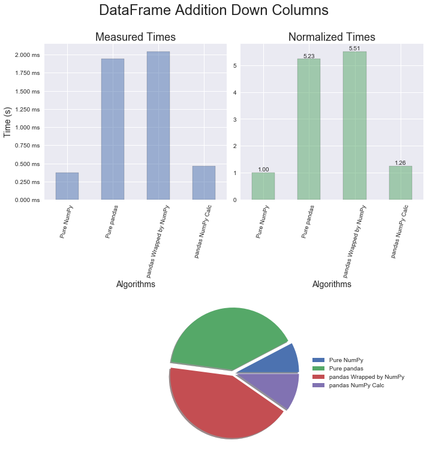
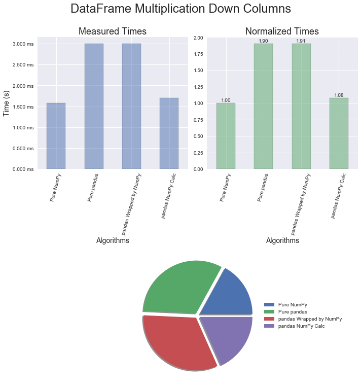
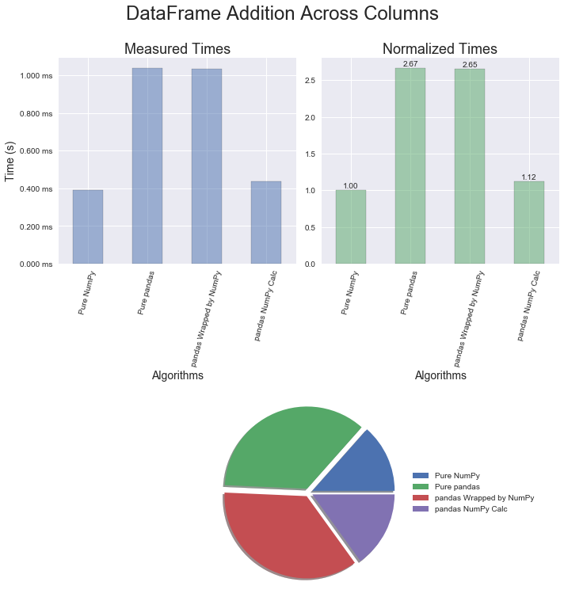
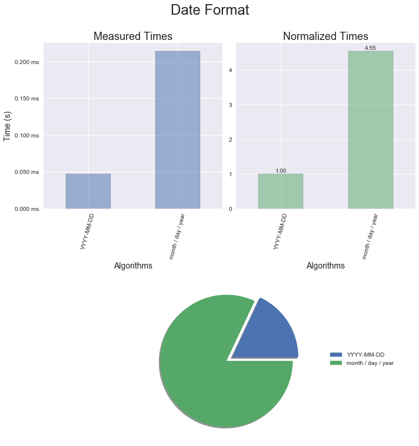

This article is going to display that sometimes processing speedups come in strange places. Hopefully, you will learn a trick or two and be able to write some better code on your project.
I have been fortunate enough to attend two different training courses put on by Enthought Scientific Computing Solutions . The instructors were Mike McKerns and Alex Chabot-Leclerc who were highly knowledgeable professionals. The most recent class was Pandas Mastery Workshop , which I would highly recommend. During the course Alexandre made numerous comments about performance differences, and I wanted to document some surprising methods to speed up Pandas .
The notebook with all the code to recreate this study is located here .
The following versions of packages were used to measure the executions times.
NOTE: The timeit.autorange method was introduced in Python 3.6 and is used to automatically determine how many times to call timeit in the provided notebook.
Pandas has a multitude of well thought out quality methods, but there is a price to pay to get them. A younger version of myself used to think, "Straight up Numpy is good enough for me.", and I refused to even consider a number of great packages. Now that I've been reformed, one of the key ideas I learned is use the packages that are out there, and when something doesn't seem quite right, then it's time to dig a little deeper.
When equivalent operations are performed in Numpy and Pandas, Numpy is clearly faster. The sunburst graphics below were generated using SNAKEVIZ , which works with cProfiler to display what is happening in the interpreter when code is executed.
arr = np.arange(1e6)
ser = pd.Series(np.arange(1e6))
df = pd.DataFrame(np.arange(1e6).reshape(1000, 1000))





